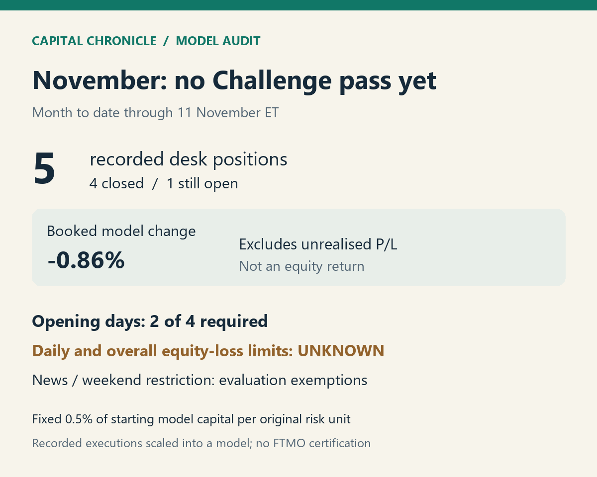

Our November FTMO test has not passed yet

Capital Chronicle model audit. Booked model change excludes unrealised P/L. Original risk normalised to 0.5% of starting model capital.
We have not passed FTMO's two-step Challenge objectives in our November model replay.
Through 11 November ET, the record contains five desk positions: four closed and one still open. This is a month-to-date check, not a completed-month result.
We scale each position's frozen original risk to 0.5% of starting model capital. We retain its recorded execution timing and observed trading costs, without compounding.
Closed results and booked costs leave the model at -0.86%, before the open position's unrealised result. That is not an equity return.
Where the test stands
FTMO's two-step objectives distinguish profit, equity losses and trading days. Our verdicts keep those tests separate.
| Objective | Verdict at the cutoff | Why |
|---|---|---|
| Profit objective of 10%, with all positions closed | Not met | The target has not been reached at a recorded point when every position was closed. |
| Minimum: four trading days | Not met | Positions opened on two FTMO calendar days; holding or closing on another day does not add an opening day. |
| Maximum daily loss: 5% of starting capital | Unknown | The full risk-normalised intraday equity path is unavailable. |
| Maximum overall loss: 10% of starting capital | Unknown | The same equity-path gap prevents a reliable pass verdict. |
| Selected-news execution window | Does not apply during Challenge | FTMO exempts Challenge and Verification from this restriction. |
| Holding through long market breaks | Does not apply during Challenge | FTMO exempts Challenge and Verification from this restriction. |
FTMO measures trading days in its Central European calendar. Its daily-loss floor starts from the balance at that day's midnight; floating results, commissions and swaps count toward equity.
We have recorded flat checkpoints, but they do not establish what equity did between them. Calling either loss limit a pass would overstate this record.
Evaluation and funded accounts have different restrictions
FTMO's news rule covers executions around selected announcements on affected instruments, including stops, profit-taking orders and pending orders.
For subsequent Standard accounts, the restricted window runs from two minutes before to two minutes after the release. The holding rule requires closing before market breaks longer than two hours.
Challenge, Verification and Swing accounts have the stated exemptions. FTMO's forbidden-practices rules still apply; this check does not certify compliance with every contractual term.
One labelled operations test is excluded. Cash movements do not count toward model profit.
So what: we need the target, enough opening days and a complete equity-loss check before claiming a pass. FTMO's unlimited evaluation period makes "not met yet" different from disqualification.
This is our model replay, not an actual FTMO result or a strategy to copy. There is no affiliate link.
Capital Chronicle offers analysis only, not financial advice or recommendations.